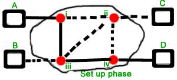
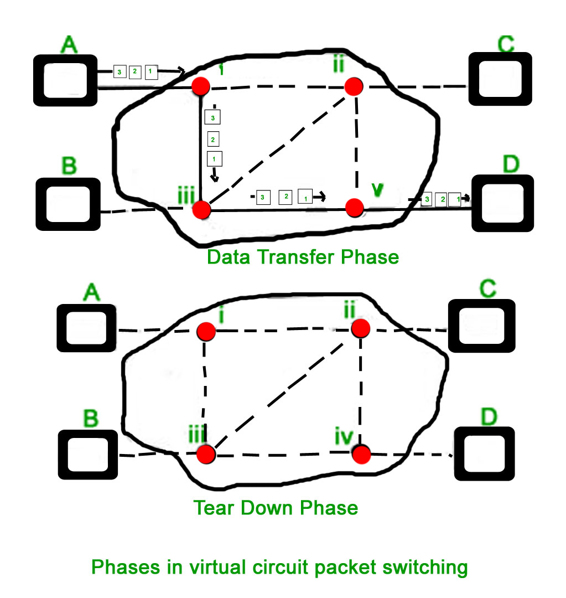
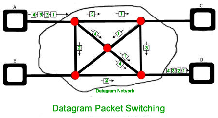
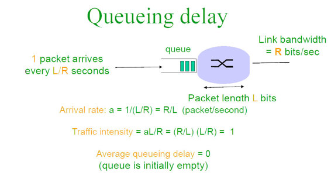

Packet switching is a method of transferring the data to a network in form of packets. In order to transfer the file fast and efficient manner over the network and minimize the transmission latency, the data is broken into small pieces of variable length, called Packet. At the destination, all these small-parts (packets) has to be reassembled, belonging to the same file. A packet composes of payload and various control information. No pre-setup or reservation of resources are needed.
Packet Switching uses Store and Forward technique while switching the packets; while forwarding the packet each hop first store that packet then forward. This technique is very beneficial because packets may get discarded at any hop due to some reason. More than one path is possible between a pair of source and destination. Each packet contains Source and destination address using which they independently travel through the network. In other words, packets belonging to the same file may or may not travel through the same path. If there is congestion at some path, packets are allowed to choose different path possible over existing network.
Packet-Switched networks were designed to overcome the weaknesses of Circuit-Switched networks, since circuit-switched networks were not very effective for small messages.
Advantage of Packet Switching over Circuit Switching :
- More efficient in terms of bandwidth, since the concept of reserving circuit is not there.
- Minimal transmission latency.
- More reliable as destination can detect the missing packet.
- More fault tolerant because packets may follow different path in case any link is down, Unlike Circuit Switching.
- Cost effective and comparatively cheaper to implement.
Disadvantage of Packet Switching over Circuit Switching :
- Packet Switching don’t give packets in order, whereas Circuit Switching provides ordered delivery of packets because all the packets follow the same path.
- Since the packets are unordered, we need to provide sequence numbers to each packet.
- Complexity is more at each node because of the facility to follow multiple path.
- Transmission delay is more because of rerouting.
- Packet Switching is beneficial only for small messages, but for bursty data (large messages) Circuit Switching is better.
Modes of Packet Switching :
- Connection-oriented Packet Switching (Virtual Circuit) :- Before starting the transmission, it establishes a logical path or virtual connection using signalling protocol, between sender and receiver and all packets belongs to this flow will follow this predefined route. Virtual Circuit ID is provided by switches/routers to uniquely identify this virtual connection. Data is divided into small units and all these small units are appended with help of sequence number. Overall, three phases takes place here- Setup, data transfer and tear down phase.

All address information is only transferred during setup phase. Once the route to destination is discovered, entry is added to switching table of each intermediate node. During data transfer, packet header (local header) may contain information such as length, timestamp, sequence number etc.
Connection-oriented switching is very useful in switched WAN. Some popular protocols which uses Virtual Circuit Switching approach are X.25, Frame-Relay, ATM and MPLS(Multi Protocol Label Switching). - Connectionless Packet Switching (Datagram) :- Unlike Connection-oriented packet switching, In Connectionless Packet Switching each packet contains all necessary addressing information such as source address, destination address and port numbers etc. In Datagram Packet Switching, each packet is treated independently. Packets belongs to one flow may take different routes because routing decisions are made dynamically, so the packets arrived to destination might be out of order. It has no connection setup and tear down phase, like Virtual Circuits.
Packet delivery is not guaranteed in connectionless packet switching, so the reliable delivery must be provided by end systems using additional protocols.
A---R1---R2---B A is the sender (start) R1,R2 are two router that store and forward data B is receiver(destination)
To send packet from A to B there are delays since this is a Store and Forward network.
Delays in Packet switching :
- Transmission Delay
- Propagation Delay
- Queuing Delay
- Processing Delay
Transmission Delay :
Time taken to put a packet onto link. In other words, it is simply time required to put data bits on the wire/communication medium. It depends on length of packet and bandwidth of network.Transmission Delay = Data size / bandwidth = (L/B) second
Propagation delay :
Time taken by the first bit to travel from sender to receiver end of the link. In other words, it is simply the time required for bits to reach destination from start point. Factors on which Propagation delay depends are Distance and propagation speed.Propagation delay = distance/transmission speed = d/s
Queuing Delay :
Queuing delay is the time a job waits in a queue until it can be executed. It depends on congestion. It the time difference between when packet arrived Destination and when the packet data was processed or executed. It may be caused by mainly three reasons i.e. originating switches, intermediate switches or call receiver servicing switches.
Average Queuing delay = (N-1)L/(2*R) where N = no. of packets L=size of packet R=bandwidthProcessing Delay :
Processing delay is the time it takes routers to process the packet header. Processing of packets help in detecting bit-level errors that occur during transmission of packet to destination. Processing delays in high-speed routers are typically on the order of microseconds or less.
In simple words, it is just the time taken to process packets.Total time or End-to-End time = Transmission delay + Propagation delay+ Queuing delay + Processing delayFor M hops and N packets –
Total delay = M*(Transmission delay + propagation delay)+ (M-1)*(Processing delay + Queuing delay) + (N-1)*(Transmission delay)For N connecting link in the circuit –
Transmission delay = N*L/R
Propagation delay = N*(d/s)
Question : How much time will it take to send a packet of size L bits from A to B in given setup if Bandwidth is R bps, propagation speed is t meter/sec and distance b/w any two points is d meters (ignore processing and queuing delay) ?
A---R1---R2---B
Ans:
N = no. of links = no. of hops = no. of routers +1 = 3
File size = L bits
Bandwidth = R bps
Propagation speed = t meter/sec
Distance = d meters
Transmission delay = (N*L)/R = (3*L)/R sec
Propagation delay = N*(d/t) = (3*d)/t sec
Total time = 3*(L/R + d/t) sec
THIS QUESTION EXPLAINS FORMULA :-
In a Packet switch network having Hops= 4, transfer 10 packets from A to B given packet size is L bits. Bandwidth to transfer data is R Mbps and speed of propagation is S meter/sec. Assume processing delay= P seconds and distance between two point is D meters. Find total time required for 10 packets to reach A from B.A---R1---R2---R3---B
Explanation :
No. of hops= No. of links = M= 4
Here we send 10 packets, also since there is no acknowledgement of packet received required we perform parallel processing. When the 1st packet reaches R2, the second packet reaches R1.Formulas used- R is in Mbps so convert to bps by multiplying 10^6. Bandwidth=R*(10^6) bps Packet size =L bits Transmission delay= Packet size/Bandwidth =L/( R*(10^6) ) Propagation Delay = Distance / Speed = D /S Processing delay is in seconds no change
Delay can also be calculated as : Delay for 1st packet to reach + delay for (N-1) packets
Delay for 1st packet = M*(Propagation delay + Transmission delay) + (M-1)*(Processing delay + Queuing delay)
Delay for N-1 remaining packets = (N-1)*(Transmission delay)So finally applying the formula and putting the values we get-
Total delay = 4*( L/(R*(10^6) + D/S) + (4-1)*(P + 0) + (10-1)*( L/(R*(10^6) )
Reference:
Wikipedia, RFC